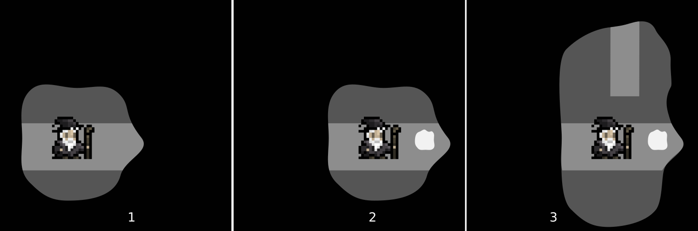
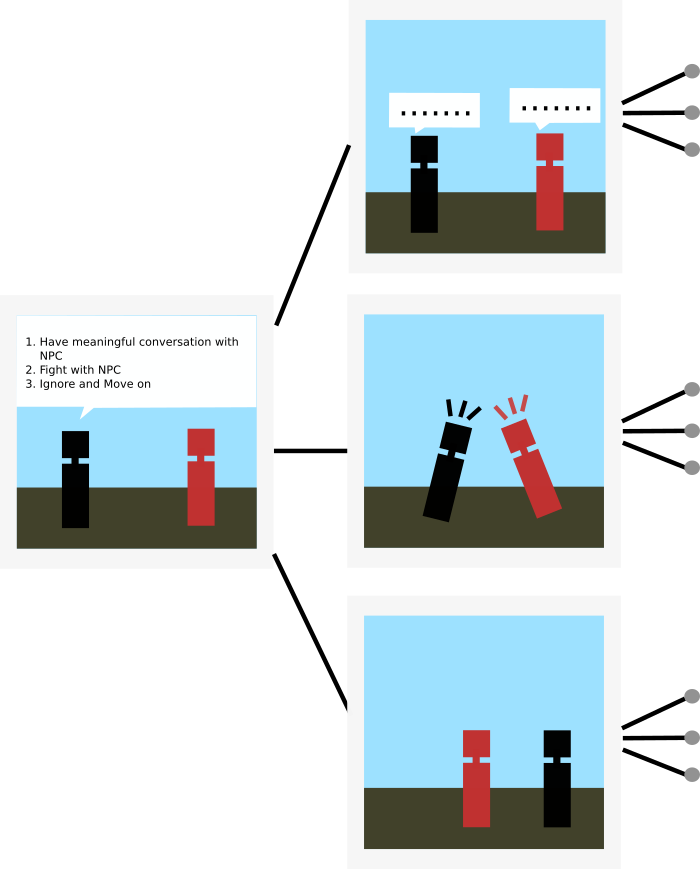
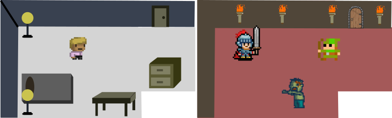

Sight is a adventure game where the player has to guide a wizard reach a portal that would restore light to the land.

The land has been shrouded in darkness and the wizard has to restore the light. The player guides the wizard (move/jump/attack) through the darkness without falling into the abyss.
(img 1) A small orb of light surrounds the wizard that is the extent of his sight.
(img 2) As the wizard moves around, There are floating orbs of light. Walking into them gives the wizard extended sight for 2 seconds (img3).
Beware unknown entities that lurk in the dark.
An branching RPG narrative where the player controls the outcome of the adventure and the entire adventure can be saved as a comic strip and shared on social media

The idea is very simple. It's a comic book that you play through. In each panel, the decision you make branches the narrative and takes you on a different narrative path. This could lead to some hilarious outcomes that can finally be viewed as a comic strip that can be shared across social media.
This is a psychological thriller RPG where you have to guide a schizoprenic person and help him/her battle psychosis. This gives a brief insight on what people with schizoprenia face daily.

The player goes about doing daily chores as delusions take over suddenly and the entire scene changes and the player is in a state of psychosis. The objective of the game is to make sure the protagonist is not consumed by the delusions.